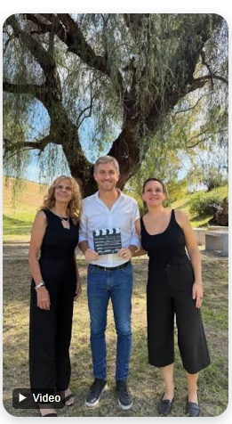
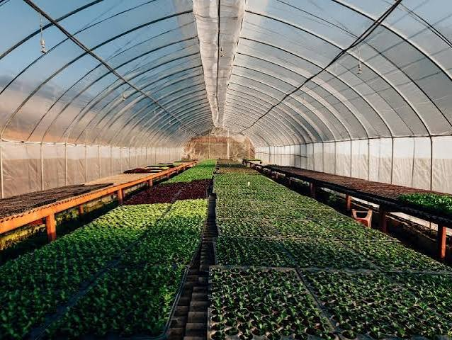

Antes que nada, ¿Que es un invernadero?
El invernadero es un espacio protegido donde se cultivan plantas en condiciones controladas.
¿Qué es nuestro invernadero?
Nuestro invernadero es un espacio del colegio destinado al cultivo de plantas y al aprendizaje sobre la naturaleza.

Una imagen ejemplo de lo que es un invernadero

Aunque no es el invernadero del colegio, es un ejemplo de lo que es un invernadero
¿Qué cultivamos?
Tomate
El tomate es una de las plantas que podemos cultivar en nuestro invernadero.
Lechuga
La lechuga necesita cuidados y riego para desarrollarse correctamente.
Aromáticas
Las plantas aromáticas aportan aroma y pueden utilizarse en diferentes comidas.
Actividades en el invernadero
- Preparar la tierra.
- Sembrar semillas.
- Regar las plantas.
- Observar su crecimiento.
- Cuidar el espacio.
Las cosas que me gustan de este proyecto es
- Ver cómo crecen las plantas.
- La dedicacion de involucrados como: estudiantes, autoridades
- La colaboración entre los miembros de la comunidad escolar
- La sensibilización sobre la importancia de la naturaleza
- La oportunidad de aprender sobre la agricultura sostenible